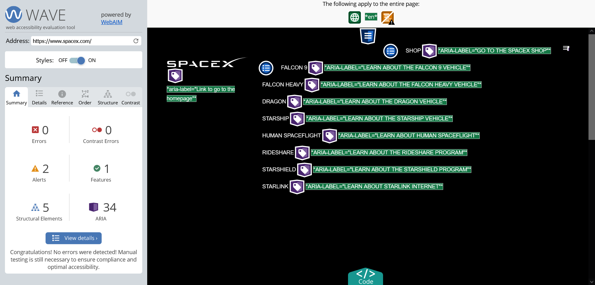
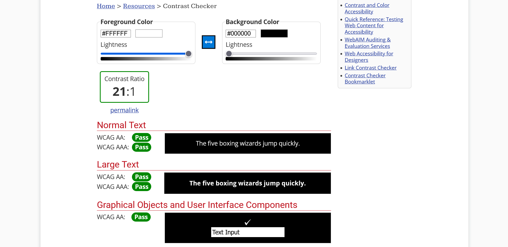
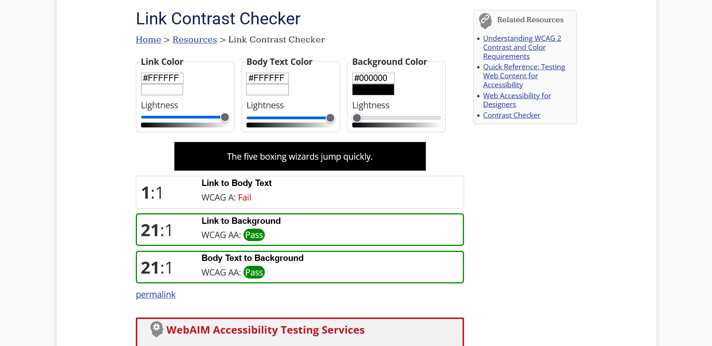
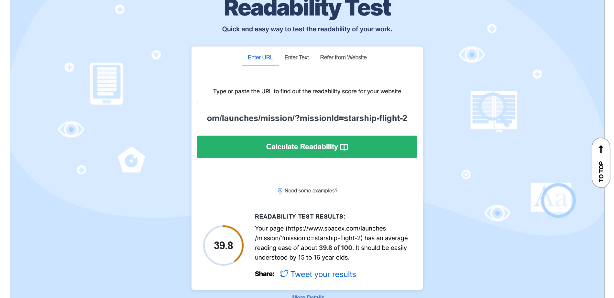

I used theWAVE Web Accessibility Evaluation Tool on one of my informative websites SpaceX
As shown in the above screenshot, the website initally complies with the accessibility standards. However, there were 2 alerts:
These are 2 important points I will consider in my website design. The next tool is WebAIM Contrast Checker
Black background with white text passes all the readability tests. This is the main theme of my website. The third test is the Link Contrast Checker.
This tool passes hyperlinks contrast to the background but not to the body text, as they are both the same colour. However, on SpaceX the hyperlinks are formatted in bold. The tool does not take this into account. I may change the format of my hyperlinks but I will consider the accessibility before I do. The final test is the Readability Test Tool.
As shown in the screenshot, the evaluation concludes that the website article is suitable for 15-16 year olds. This seems like a good general level. I feel my website will have a slightly higher reading level as I plan to use more technical words to explain coding and data science concepts.
As discussed above, the SpaceX website gets a lot right, but it could be improved upon. PDF files could instead be full html pages to improve accessibility. This would stop users having to have a separate application to access the pdfs and make sure that a screen reader could access the text. Headings (h1-h6) can be used to help structure the text which would improve readability for screen readers as well. Everything else on the website complies with accessibility guidance from my evaluation.
After completing the above evaluation, I have realised a lot that my portfolio website has got right, but also some things wrong, in regards to accessibility. My pages use headings and various html formatting such as lists and tables. These methods help with legibility for screen readers. I also make use of span tag and aria labels to add text to my menu icon and navbar so screen readers can read it out to help with navigation. I beleive my writing style is suitable - not too technical but not at such a low level people will disengage. The colours I have picked are also suitable for contrast and readability. However, the default hyperlink colour does not contrast enough. I will plan to change this to white and bold as inspirated by the SpaceX website. Another thing I could improve on is the layout of my pages. They are quite text heavy and disjointed when the media changes between text and images. I may try to improve this later. I would also like to check all more hyperlinks to make sure they are labelled properly and not just 'click here.'
I read the resource at techsmith to learn more. Subtitles are transcribed text from spoken dialogue. Captions are text to explain other sound effects such a music or noises.
I read the information on creating on a WebVTT file and then how to add captions to html.
I am happy with the high quality version above. I am satisfied I have used enough effects and material to make the quick video engaging, without over producing it and distracting from the main message. While the file size is quite high 1080p at 82.3mb compared to the low quality version 480p at 2.68mb, I feel the quality is worth it. Many people have at least 1080p monitors or larger and lower quality will negatively affect users here. All the versions can be viewed above.